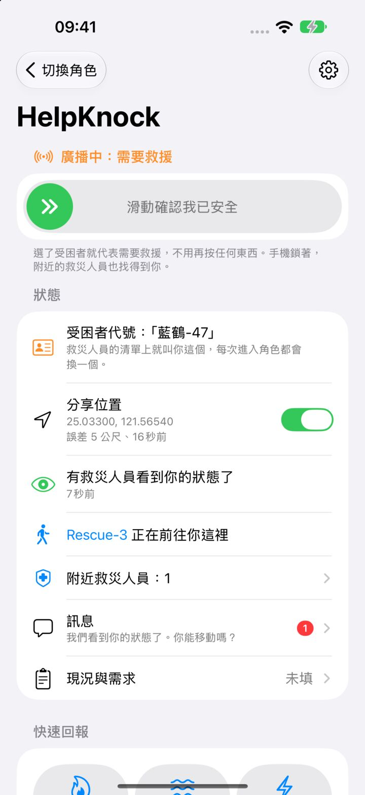
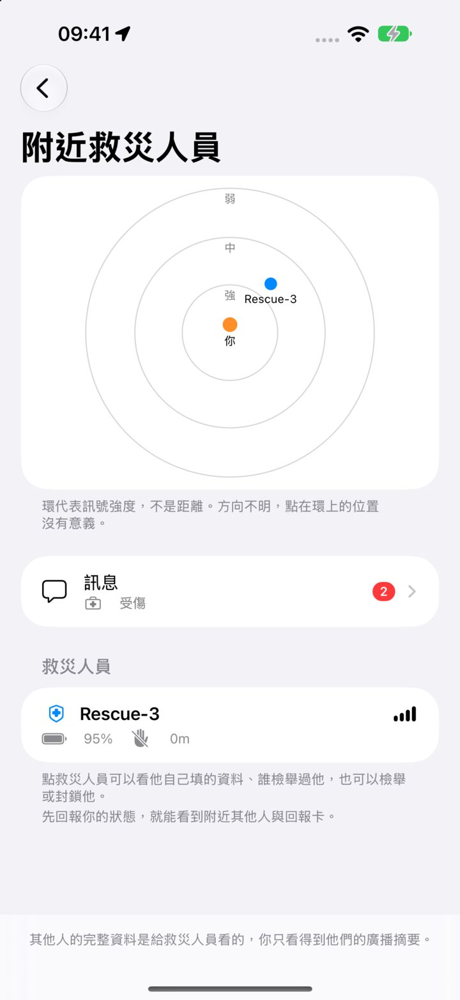
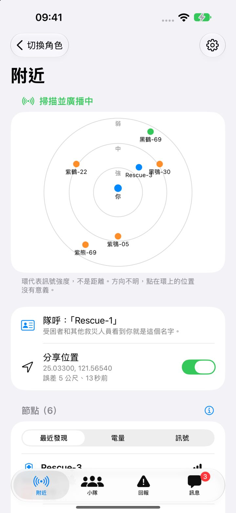
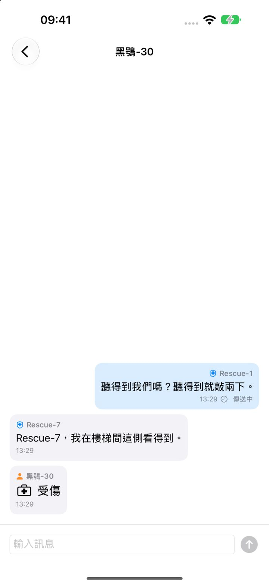

給需要幫助的人
點一下，之後它替你撐著。
- 電量、多久沒碰手機、最後一次定到的位置都自動送出。
- 起火、積水、電線、瓦斯、受傷，一個開關點一下，單手就能按。
- 看得到附近有幾位救災人員、有沒有人讀過你的狀態，也能傳訊息給他們。
- 看得到救災人員自己填的單位與能力；覺得不對勁就檢舉或封鎖。
災難中沒有網路時，手機就是你的藍牙燈塔：附近的救災人員找得到你、看得到你的狀況、能傳訊息給你，不需要任何訊號。
即將在 App Store 推出
免費 · iPhone 與 iPad · iOS 18.6 以上
這不是緊急救援專線的替代。只要還有訊號，請先打 119 或當地的緊急電話。

怎麼用
趁平常把資料填好、選好要分享什麼，並允許藍牙、定位與「動作與健身」。
手機立刻開始廣播，螢幕鎖著照樣廣播。沒有求救按鈕，也不用打字。
附近的救災人員看得到你的電量、手機多久沒動、最後一次定到的位置，也能傳訊息給你。
給需要幫助的人

給救災人員

訊息

隱私
個人與醫療資料存在你手機的鑰匙圈，求助時分享哪些由你決定。開發者收不到你輸入的任何內容。
附近任何選了救災者角色的人都讀得到你分享的內容，而且都沒有經過驗證；這個版本的藍牙傳輸沒有加密。閱讀隱私權政策。
即將在 App Store 推出
免費 · iPhone 與 iPad · iOS 18.6 以上 · 雙方的手機都要裝 HelpKnock